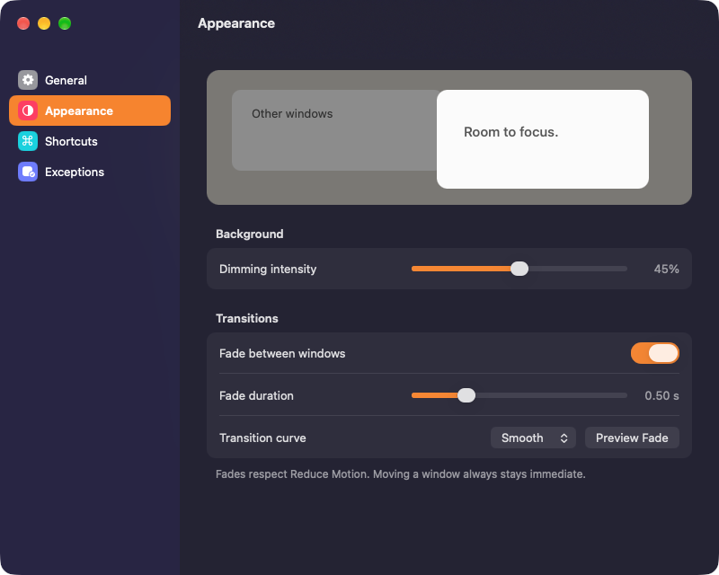
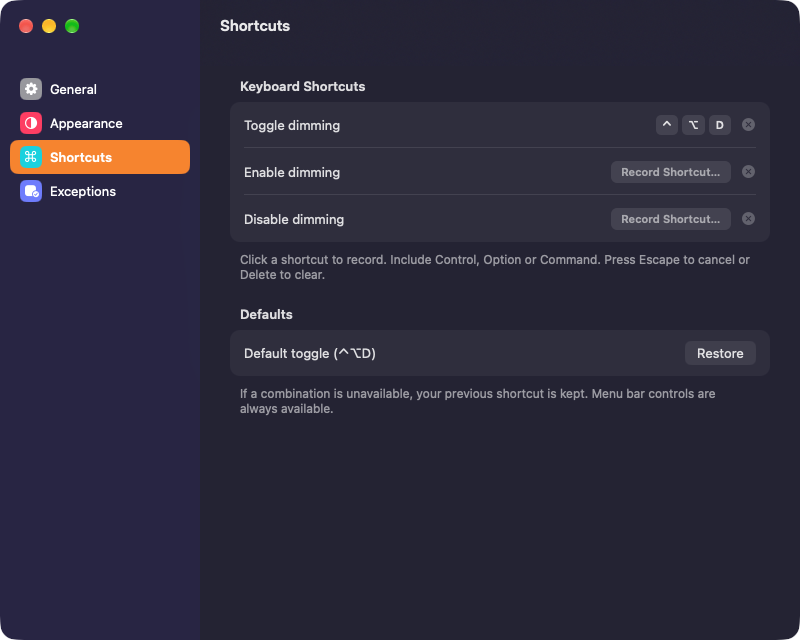
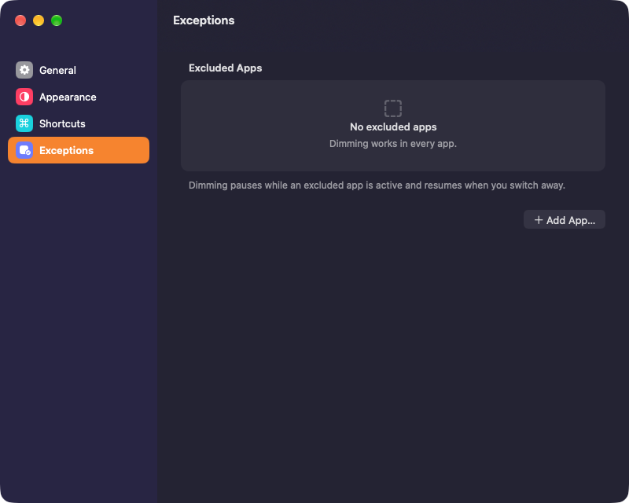
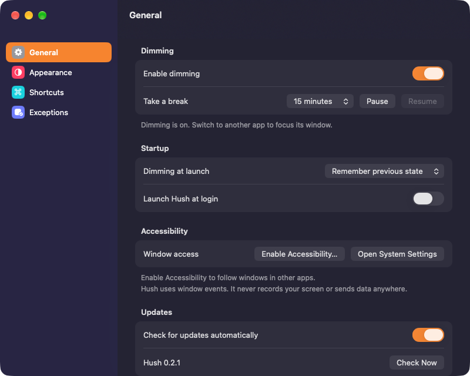

Download for MacFree · macOS 14 or later · Apple silicon & Intel
NotesFileEditFormatViewWindowHelpSat 18 Oct9:41Try the Hush menu
Click any window to focus it. The Hush icon in the menu bar turns dimming off and on, and so does ⌃⌥D.
Small app. Made to fit you.




Native and light. Written in Swift for Apple silicon and Intel. It lives in the menu bar, not the Dock.
Private by design. No screen recording, no account, no analytics. Hush only follows which window is in front.
Kept up to date. New versions arrive from GitHub inside the app. Automatic checks can be turned off.
Good to know
Will it work on my Mac?
Hush needs macOS 14 Sonoma or later and runs on Apple silicon and Intel Macs. It dims every connected display.
Why does it need Accessibility access?
To know which window is in front, so it can place the dimming right behind it. Hush doesn’t record or read your screen.
How do I install it?
Unzip the download, move Hush to Applications and open it. Then turn it on under System Settings › Privacy & Security › Accessibility. Hush isn’t notarized by Apple yet, so the first time, macOS asks you to choose Open Anyway in the same pane.
Which windows stay bright?
The window you’re using, plus menus and system panels. Apps on your exceptions list switch dimming off while they’re in front.
Is it really free?
Yes. No price, no trial and no account. The source code is on GitHub.